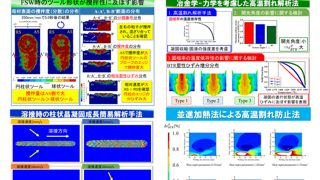

※画像は生成AIで作成したイメージです。このテーマの説明文は準備中です。
関連するページ
関連するお知らせ（題名から自動で集めたもの。8件）

論文：溶接学会論文集に投稿していた14本の論文が本年7月に採択されました。今回は、その中から【FSW解析および高温割れ解析に関する研究】に関する5本の論文をご紹介いたします。 柴原正和准教授、前田新太郎特任助教、生島一樹准教授、織田祐輔さん らが「高温割れのインプロセス防止装置の提案」に関する特許を取得しました。
柴原正和准教授、前田新太郎特任助教、生島一樹准教授、織田祐輔さん らが「高温割れのインプロセス防止装置の提案」に関する特許を取得しました。 前田新太郎特任助教らがMathematical Modelling of Weld Phenomenaに投稿していた、溶接高温割れシミュレーションに関する論文がPublishされました。
前田新太郎特任助教らがMathematical Modelling of Weld Phenomenaに投稿していた、溶接高温割れシミュレーションに関する論文がPublishされました。 前田新太郎 特任助教らがWelding Internationalに投稿していた、溶接高温割れ関係の2本の論文の掲載が決定しました。
前田新太郎 特任助教らがWelding Internationalに投稿していた、溶接高温割れ関係の2本の論文の掲載が決定しました。 前田新太郎、織田祐輔らが溶接高温割れ防止装置に関する特許出願を行いました。
前田新太郎、織田祐輔らが溶接高温割れ防止装置に関する特許出願を行いました。 三ッ井佑太らが並進加熱による高温割れ防止に関する特許出願を行いました。
三ッ井佑太らが並進加熱による高温割れ防止に関する特許出願を行いました。- 本藤祐佑らが耐高温割れ性溶接ワイヤに関する特許申請を行いました。
 「AIを用いた高温割れ防止技術」が 平成31年度 文部科学省 科学研究費 基盤研究(B) に採択されました。
「AIを用いた高温割れ防止技術」が 平成31年度 文部科学省 科学研究費 基盤研究(B) に採択されました。